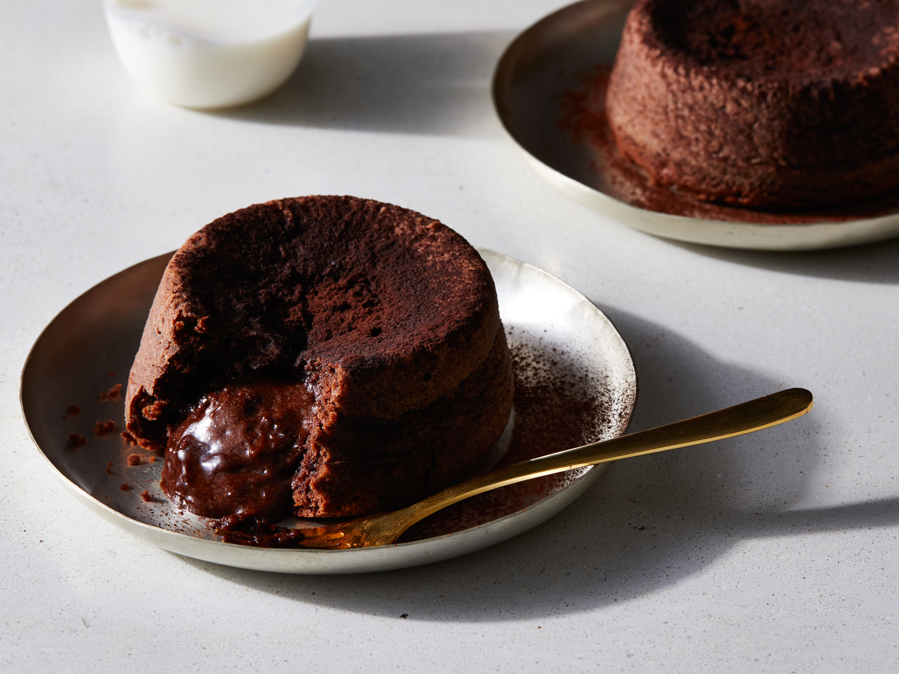

Dessert: Molten Chocolate Lava Cake

Description
Molten chocolate cakes became famous for a reason: they're cakey on the outside with an irresistible center of
warm dark chocolate flowing through the middle. It seems as though every restaurant in America offers a version
of this amazing cake created by master chef Jean-Georges Vongerichten. But his recipe is in a class all by
itself. The first time you try one, it may seem like magic, but this recipe is actually quite easy to make and
ready in under an hour.
Ingredients
- 1 Stick of Unsalted Butter
- 6 Ounces of Bittersweet Chocolate
- 2 Eggs
- 2 Egg Yolks
- 1/4 Cup of Sugar
- 2 Tablespoons of All-Purpose Flour
- A Pinch of Salt
Steps
- Preheat the oven to 450°. Butter and lightly flour four 6-ounce ramekins. Tap out the excess flour. Set the
ramekins on a baking sheet.
- In a double boiler, over simmering water, melt the butter with the chocolate. In a medium bowl, beat the
eggs with the egg yolks, sugar and salt at high speed until thickened and pale.
- Whisk the chocolate until smooth. Quickly fold it into the egg mixture along with the flour. Spoon the
batter into the prepared ramekins and bake for 12 minutes, or until the sides of the cakes are firm but the
centers are soft. Let the cakes cool in the ramekins for 1 minute, then cover each with an inverted dessert
plate. Carefully turn each one over, let stand for 10 seconds and then unmold. Serve immediately.